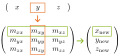
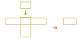
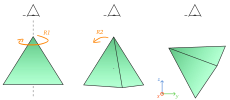

Transformation matrices#
Resulting code: step054
Resulting code: step054-vanilla
We have been manipulating transforms in our shader code at multiple occasions already: offset of the 2D scene, viewport ratio, rotation of the 3D object. This chapter presents a proper and unified way of handling these. This will lead us in the next part to the introduction of the perspective transform!
This chapter introduces mathematical concepts. I want to reassure those of you who do not feel comfortable with math: I try to introduce as smoothly as possible and to always justify its use. Think of it as a way to learn math thanks to 3D and not the other way around!
A common formalism#
Let us summarize the various cases of transforms that we have encountered in the previous chapters:
var position = in.position;
// Offset the object
position.x += 0.25;
// Rotate the view point
position = vec3<f32>(
position.x,
cos(angle) * position.y + sin(angle) * position.z,
cos(angle) * position.z - sin(angle) * position.y,
);
// Project on the XY plane and apply ratio
out.position = vec4<f32>(position.x, position.y * ratio, position.z * 0.5 + 0.5, 1.0);
Note
There is not much difference between moving the object and moving the viewpoint. The line position.x += 0.25 can be seen either as moving the object forward along the X axis or moving the viewpoint backwards along the X axis. But as soon as we have multiple objects and/or light sources, this distinction becomes relevant.
We can actually unify these transforms under a common formalism. First of all, we can see both the object and screen projection as a scaling plus a translation:
// Object transform
let objectScale = vec3<f32>(1.0, 1.0, 1.0);
let objectTranslate = vec3<f32>(0.25, 0.0, 0.0);
position = position * objectScale + objectTranslate;
// View transform
position = vec3<f32>( /* ... */ );
// Projection/Screen transform
let viewportScale = vec3<f32>(1.0, ratio, 0.5);
let viewportTranslate = vec3<f32>(0.0, 0.0, 0.5);
out.position = vec4<f32>(position * viewportScale + viewportTranslate, 1.0);
What about the rotation? We need a bit more than a vector scaling for this, because me mix multiple axes. And this is exactly what a matrix is for!
Matrices#
Definition#
A matrix is a double entry table that describes a way to build a new vector by linearly mixing the coordinates of an input vector. Each row of the matrix lists the mixing coefficients to build one of the output coordinates.
The coefficient \(m_{xy}\) is the influence factor of \(y\) on the new coordinate \(x\).
The \(i\)-th row describes the \(i\)-th output coordinate. And on each row, the \(j\)-th coefficient tells how much of the input’s \(j\)-th coordinate we must mix.
Note
The term “linearly” just means that we can only scale and add input coordinates. We cannot for instance multiply \(x\) by \(y\). In general linear coordinate mixes have the form \(\alpha x + \beta y + \gamma z\) where \(\alpha\), \(\beta\) and \(\gamma\) are predefined factors (coefficients of the matrix).
Scaling matrix#
Let us see a simple example first: scaling a vector consists in applying a diagonal matrix, because the \(i\)-th coordinate of the scaled vector only depends on the \(i\)-th coordinate of the input one:
The application of the transform described by the matrix to a vector is denoted as a product: \(b = M \times a\) or just \(b = Ma\), and M * a in code.
Note
This choice of notation results from the fact that this operation behaves in many ways like a multiplication between two numbers (more details later). But note however that it is not fully the same. In particular, we cannot swap the operand and write \(x \times M\) (it is called non-commutative).
// Option A
position = position * vec3<f32>(1.0, ratio, 0.5);
// Option B, which is equivalent
let M = transpose(mat3x3<f32>(
// in x y z
1.0, 0.0 , 0.0, // -> out x = 1.0 * x + 0.0 * y + 0.0 * z = x
0.0, ratio, 0.0, // -> out y = ratio * y
0.0, 0.0 , 0.5, // -> out z = 0.5 * z
));
position = M * position;
Important
WGSL (like GLSL and HLSL) expects the arguments of the mat3x3 constructor to be given column by column, despite the fact that they visually appear in rows in our source code. Instead of always thinking in mirror, which is quite prone to error, I added a transpose operation after the creation of the matrix in order to flip it along its diagonal. It does not make a difference for a diagonal matrix like this one, but this is very important in general.
Hint
The matrix with 1.0 on the diagonal and 0.0 anywhere else is called the identity matrix \(I\) and has a very special property: it changes nothing (\(Ix = x\) for any vector \(x\)).
Rotation matrix#
For a simple scale, matrices seem a bit overkill, but it becomes interesting when we want to encode a rotation:
let c = cos(angle);
let s = sin(angle);
// Option A: Rotate the view point manually
position = vec3<f32>(
position.x,
c * position.y + s * position.z,
c * position.z - s * position.y,
// ^ beware that y and z are not in the same order here!
);
// Option B: Rotate the view point using a matrix
let R = transpose(mat3x3<f32>(
// in x y z
1.0, 0.0, 0.0, // -> out x = 1.0 * x
0.0, c, s, // -> out y = c * y + s * z
0.0, -s, c, // -> out z = -s * y + c * z
));
position = R * position;
Perfect, this matrix-based formalism enable us to represent both scaling and rotation!
Homogeneous coordinates#
But what about the translation? There is good and bad news. The bad is that a \(3 \times 3\) matrix cannot encode a translation. The good is that a \(4 \times 4\) matrix can!
Let me explain, the matrix tells how to transform a vector by mixing its coordinate with each others. But it does not allow to add anything to the mix that is a constant value (i.e., something that does not depend on an input coordinate).
Note
A matrix represents what is known as a linear transform, which also gives its name to the whole field of linear algebra by the way. The combination of a linear transform with a translation is called an affine transform.
How do we address this? We add an extra coordinate that is meant to always equal 1. Adding a constant value \(t\) now corresponds to adding \(t\) times the 4th coordinate and is thus a “legal” mix:
// Option A
position = position + vec3<f32>(tx, ty, tz);
// Option B, which is equivalent (BUT WON'T WORK as-is, see below)
let M = transpose(mat4x3<f32>(
// in x y z 1.0
1.0, 0.0, 0.0, tx, // -> out x = 1.0 * x + tx * 1.0
0.0, 1.0, 0.0, ty, // -> out y = 1.0 * y + ty * 1.0
0.0, 0.0, 1.0, tz, // -> out z = 1.0 * z + tz * 1.0
));
position = M * vec4<f32>(position, 1.0);
Caution
Mathematically, the code above makes sense: a non-square 3x4 matrix takes an input vector of size 4 and returns an output of size 3. However, WGSL only supports square matrices (and so do other shading languages).
There would anyway be only little use of non-square matrices, because this prevents us from chaining transforms. Instead of returning a vector \((x, y, z)\), we would rather return the vector \((x, y, z, 1.0)\) so that we may apply again another transform. This should be easy:
// Option A
position = position + vec3<f32>(tx, ty, tz);
// Option B, which is equivalent (and working, now)
let M = transpose(mat4x4<f32>(
// in x y z 1.0
1.0, 0.0, 0.0, tx, // -> out x = 1.0 * x + tx * 1.0
0.0, 1.0, 0.0, ty, // -> out y = 1.0 * y + ty * 1.0
0.0, 0.0, 1.0, tz, // -> out z = 1.0 * z + tz * 1.0
0.0, 0.0, 0.0, 1.0, // -> out w = 1.0
));
position = (M * vec4<f32>(position, 1.0)).xyz;
Note
Notice how the upper-left \(3 \times 3\) quadrant is the identity matrix. This part of the \(4 \times 4\) matrix corresponds to the scale and/or rotation (and/or skew).
It is important to note that this 4th coordinate is not just a hack for storing the translation on top of the linear transform. Everything behaves as if there was a 4th dimension, so all the nice mathematical properties about matrices still hold.
As long as the last coordinate remains \(1.0\), these vectors still represent 3D points. This is called the homogeneous coordinate of the point, and we’ll understand why better when talking about perspective!
Composition#
Matrices provide a common way to represent rotation, scaling and translation. But the power of matrices gets even crazier when we start composing them!
Product#
For instance if we want to combine a scaling and a translation, we can manually coin a matrix that does both:
// Option A
let objectScale = vec3<f32>(0.5, 0.5, 0.5);
let objectTranslate = vec3<f32>(0.25, 0.0, 0.0);
position = position * objectScale + objectTranslate;
// Option B: A matrix that combines scaling THEN translation
let M = transpose(mat4x4<f32>(
// in x y z 1.0
0.5, 0.0, 0.0, 0.25, // -> out x = 0.5 * x + 0.25
0.0, 0.5, 0.0, 0.0, // -> out y = 0.5 * y
0.0, 0.0, 0.5, 0.0, // -> out z = 0.5 * z
0.0, 0.0, 0.0, 1.0, // -> out w = 1.0
));
let homogeneous_position = vec4<f32>(position, 1.0);
position = (M * homogeneous_position).xyz;
But this can be tedious when it comes to mixing rotations for instances. We can instead reuse our previous atomic matrices and combine them together with a matrix multiplication:
// Option C: Matrix composition
// Scaling matrix
let S = transpose(mat4x4<f32>(
// in x y z 1.0
0.5, 0.0, 0.0, 0.0, // -> out x = 0.5 * x
0.0, 0.5, 0.0, 0.0, // -> out y = 0.5 * y
0.0, 0.0, 0.5, 0.0, // -> out z = 0.5 * z
0.0, 0.0, 0.0, 1.0, // -> out w = 1.0
));
// Translation matrix
let T = transpose(mat4x4<f32>(
// in x y z 1.0
1.0, 0.0, 0.0, 0.25, // -> out x = x + 0.25
0.0, 1.0, 0.0, 0.0, // -> out y = y
0.0, 0.0, 1.0, 0.0, // -> out z = z
0.0, 0.0, 0.0, 1.0, // -> out w = 1.0
));
// Composed matrix
let M = T * S;
let homogeneous_position = vec4<f32>(position, 1.0);
position = (M * homogeneous_position).xyz;
There are a few important things to note here:
MisT * Sin this order, and this is different fromS * T.This product reads backwards: we apply
SthenT.The matrix-matrix product
T * Sis a matrix obtained by taking each column ofSand transforming it withTas if it was a vector.
Why does this work? We can decompose it:
let a = vec4<f32>(position, 1.0);
let b = S * a; // We scale 'a'
let c = T * b; // We translate 'b'
position = c.xyz;
We can directly write c = T * (S * a), and the math tells us that we can actually evaluate the products with a different precedence: c = (T * S) * a. This is why applying the transform M = T * S is equivalent to applying S then T.
Note
This change from T * (S * a) to (T * S) * a is called the associativity. It is a property that the matrix multiplication shares with the real multiplication, and thus one of the motivations for using the same notation. The matrix multiplication is however not commutative.
Tip
In this case applying T before S would lead to an overall translation of only \(0.125\) (half \(0.25\)) because the translation would be affected by the scaling.
Rotations#
Equipped with this new multiplication tool, we can start experimenting with more complex transforms that were hard to define before. A good example is the combination of 2 rotations along different axes.
The first transform rotates the object in the XY plane, the second one rotates in the YZ plane..
We can define these two transforms independently as matrices, then simply multiply them together:
// Rotate the model in the XY plane
let angle1 = uMyUniforms.time;
let c1 = cos(angle1);
let s1 = sin(angle1);
let R1 = transpose(mat3x3<f32>(
c1, s1, 0.0,
-s1, c1, 0.0,
0.0, 0.0, 1.0,
));
// Tilt the view point in the YZ plane
// by three 8th of turn (1 turn = 2 pi)
let angle2 = 3.0 * pi / 4.0;
let c2 = cos(angle2);
let s2 = sin(angle2);
let R2 = transpose(mat3x3<f32>(
1.0, 0.0, 0.0,
0.0, c2, s2,
0.0, -s2, c2,
));
// Compose and apply rotations
// (R1 then R2, remember this reads backwards)
position = R2 * R1 * position;
Composition of two rotations
This example would have been quite hard to create manually. Furthermore, we will see that it is very useful to keep the model transform separate from the view angle.
Note
The formula to directly create the matrix R2 * R1 is:
let R2_times_R1 = transpose(mat3x3<f32>(
c1, s1, 0.0,
-s1 * c2, c1 * c2, s2,
s1 * s2, -s2 * c1, c2,
));
This is really not an intuitive result, which shows how helpful it is to see combined transforms as matrix multiplications.
More advanced example#
We finish this chapter by a little exercise of matrix combination: could you guess how to obtain this following transform?
Hint
The view angle is that same as in the previous example.
A more advanced matrix-based transform
Answer We obtain this by applying in this order:
A scaling of factor \(0.3\).
A translation of \(0.5\) along the \(x\) axis.
The animated rotation R1.
The view angle rotation R2.
// Scale the object
let S = transpose(mat4x4<f32>(
0.3, 0.0, 0.0, 0.0,
0.0, 0.3, 0.0, 0.0,
0.0, 0.0, 0.3, 0.0,
0.0, 0.0, 0.0, 1.0,
));
// Translate the object
let T = transpose(mat4x4<f32>(
1.0, 0.0, 0.0, 0.5,
0.0, 1.0, 0.0, 0.0,
0.0, 0.0, 1.0, 0.0,
0.0, 0.0, 0.0, 1.0,
));
// [...] Define R1 and R2 as above BUT as mat4x4
let homogeneous_position = vec4<f32>(position, 1.0);
position = (R2 * R1 * T * S * homogeneous_position).xyz;
Note
Rotations always occur around the origin point (the one of coordinates \((0,0,0)\)). To rotate around a different point, combine a rotation with one translation before and one after.
Conclusion#
This was an important chapter, that justifies why matrices are so useful in the graphics pipeline, and explains why we manipulate 4x4 matrices even if we are only in 3D.
The next chapter is still about matrices, but this time for the final perspective projection.
Resulting code: step054
Resulting code: step054-vanilla